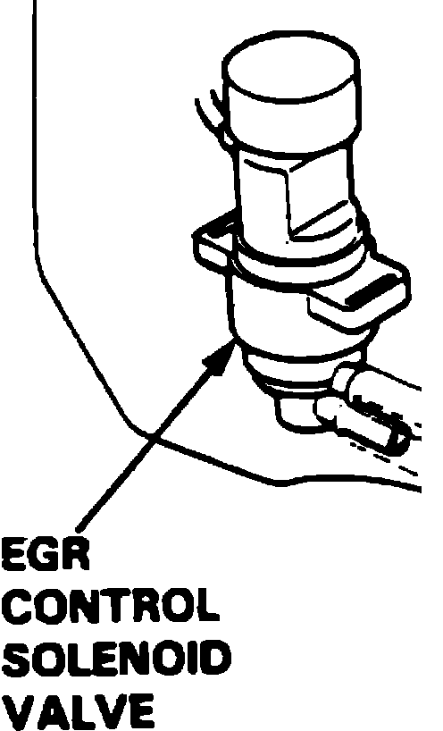

EGR Electronic Vacuum Regulator Solenoid: Description and Operation
EGR Control Solenoid Valve:

PURPOSE
Controlled by the Engine Control Module (ECM) and permits Exhaust Gas Recirculation (EGR) operation.
OPERATION
When energized, electromagnetism opens the valve, connecting the passage between the two ports.
CONSTRUCTION
Electromechanical vacuum switching valve.